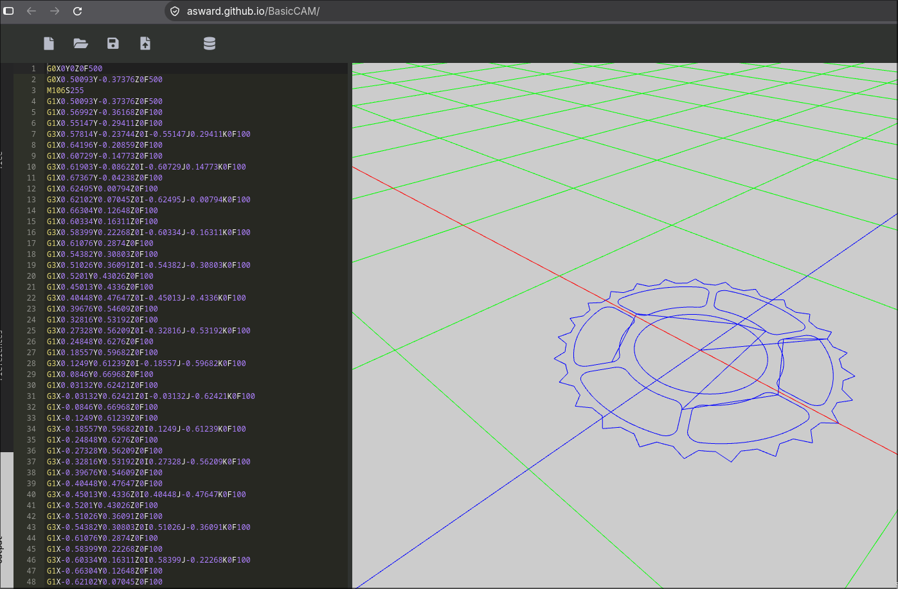

DXFReader

BasicCAM turns 2D CAD drawings (.dxf) into G-code for laser cutters and CNC machines. It's a .NET Standard library with a WebAssembly front end, so it runs entirely in the browser. I built it to go straight from a DXF to a cut file without a heavyweight CAM package.
Underneath it is DXFReader, a separate .NET Standard library I wrote to parse ASCII DXF files into objects. It focuses on the ENTITIES section and handles lines, arcs, circles, ellipses and polylines, which are the shapes BasicCAM needs to build toolpaths.
After you load a drawing, you can adjust the G-code settings, add multiple passes, scale the part, and offset the geometry to account for laser or cutter width. Try it or see the source.